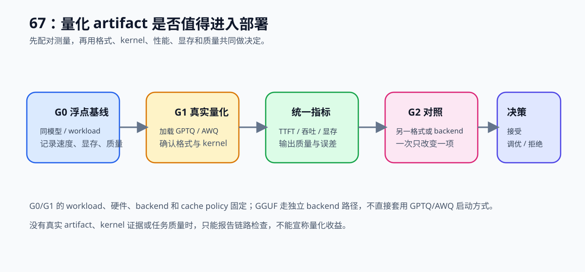

67. Quantized Inference and Deployment | 量化推理与部署
难度： Hard | 环境： CPU-first | 标签： 量化压缩, 量化推理, 部署 | 目标人群： 项目决策练习者
本节导读
本节要求你验证一个量化推理方案是否满足部署条件。先固定 workload、运行后端和误差阈值，再比较 baseline 与量化方案的延迟、吞吐、显存和输出误差，同时记录 kernel 支持与反量化开销。最终输出一份部署建议，并明确方案适用的模型和服务条件。
层级定位： 本项目主落在 L4，关注量化模型如何被加载、执行和服务；低比特 kernel 属于 L2，模型版本、灰度发布和集群资源治理属于 L5，不在本项目内混为同一个结论。
主责与复用边界： 本项目主责是量化 artifact 的加载、执行和部署判断；显存优化路线只复用权重 / KV Cache 的容量证据，推理性能路线复用 TTFT、TPOT 和吞吐口径，训练侧 QLoRA 不在本项目重复验证。
关键词： quantization, inference, deployment

展开官方原理、图解与任务要求
前置阅读
导语： 先把 W8A16、QLoRA、量化理论和基础推理对比看过，再进入量化部署项目会更容易判断压缩收益是否值得保留。
相关阅读
导语： 完成量化部署选型后，用 74 检查收益是否有 profiler 证据；如果需要观察请求级行为，再进入 70 的 serving 调度基准。
Step 1: 定义量化部署项目目标
先固定模型、tokenizer、workload、硬件和 backend，再只改变量化 artifact 或量化格式。实验目标由显存、速度、质量和兼容性四类指标共同决定；低 bit 本身不是部署结论。
先按 66 的 G0/G1/G2 方式划分实验组：
| 组别 |
环境 |
实验内容 |
主要回答的问题 |
| C0 量化机制 |
CPU |
改变 bits、group size 和权重分布 |
存储量、元数据和误差如何变化？ |
| C1 决策模拟 |
CPU |
输入 baseline / candidate 指标和误差预算 |
什么条件下值得继续部署？ |
| G0 浮点 baseline |
GPU/backend |
固定模型和 workload，运行 FP16/BF16 |
当前硬件和 backend 的基线是什么？ |
| G1 真实量化 |
GPU/backend |
只改变一种量化格式或 artifact |
量化是否真的降低显存或延迟？ |
| G2 格式/backend 对照 |
GPU/backend |
比较多个已确认支持的格式或 backend |
收益是否来自量化本身且值得迁移？ |
C0/C1 是 CPU-first 主线；G0/G1 需要真实 GPU 和量化 artifact；G2 是可选扩展。没有真实 artifact 时，G1 只能报告链路检查，不能填写量化收益。量化 bit、dtype 和 backend 必须作为不同变量记录。
| 候选 |
本项目要验证的机制 |
最小真实证据 |
| GPTQ |
校准后的权重量化与误差补偿 |
GPTQ artifact 被目标 backend 加载，并确认量化执行路径 |
| AWQ |
激活感知与敏感权重保护 |
AWQ artifact 被目标 backend 加载，并记录校准与 kernel 信息 |
| GGUF |
文件封装、格式兼容与部署加载 |
GGUF artifact 被对应 GGUF backend 加载；不能沿用 GPTQ/AWQ 的启动参数 |
Step 2: 先确认 baseline 与量化口径合法
先跑通 FP16/BF16 baseline，再只替换量化 artifact 或量化格式。下面的表格用于检查两组实验是否真的同口径：
| 条件 |
G0 baseline |
G1/G2 candidate |
| 模型与 tokenizer |
固定版本 |
与 G0 相同 |
| workload |
prompt、生成长度、batch、并发、cache policy |
与 G0 相同 |
| 运行环境 |
GPU、driver、PyTorch/CUDA、backend 版本 |
尽量相同 |
| 唯一变量 |
FP16/BF16 浮点权重 |
量化 artifact、格式或明确 backend |
| 校准记录 |
不适用 |
split、样本数、最大长度、版本 |
Step 3: 用统一口径比较收益与代价
同时比较性能、显存、数值误差和任务质量；每个指标都要能追溯到同一组 workload 和结果文件。
| 指标组 |
记录字段 |
用来回答什么 |
| 性能 |
latency / TTFT / TPOT / throughput |
是否更快，是否适合当前请求负载 |
| 容量 |
peak VRAM / load status |
是否装得下，是否提高并发或上下文上限 |
| 质量 |
error / task metric |
量化误差是否超过预算 |
| 兼容性 |
format / kernel evidence / backend version |
收益是否来自可复核的执行路径 |
Step 4: 输出部署选型结论
按质量门槛、兼容性和性能收益输出 accept / tune / reject：
| 决策 |
条件 |
下一步 |
| accept |
真实 artifact 加载成功、kernel/格式已确认、质量达标且性能或容量有收益 |
保留配置并扩大 workload 回归 |
| tune |
质量达标但收益不稳定，或校准、粒度、backend 仍需调整 |
补采数据或调整单一变量 |
| reject |
质量超预算、无法加载、kernel 不支持或没有可接受收益 |
更换格式、backend 或回到 baseline |
报告必须保留量化格式、粒度、校准信息、backend、硬件和完整 workload；没有真实加载和 kernel 证据时，只能报告链路检查。
Step 5：CPU 实验——量化账本与误差机制
上面的 Step 1-4 定义项目口径；下面用 CPU 代码实现量化账本、模拟耗时、指标比较和部署决策。真实量化、校准、任务评估与压测放在 Step 6。
测试
题目与测试代码 · Cell 6
# TODO 0：实现 per-group 量化、反量化，并统计存储与误差
def simulate_weight_quantization(weights: List[float], bits: int = 8, group_size: int = 2) -> Dict[str, float]:
"""用对称 per-group 量化模拟存储压缩和反量化误差。
bits 决定有符号量化范围，group_size 决定每个 scale 覆盖的权重数；
返回的是权重重构误差和存储估算，不是模型任务质量或真实 artifact 大小。
"""
# 提示：每组 scale 使用该组最大绝对值；全零组要避免除零。
# 量化误差按 reconstructed - original 计算，元数据也要计入 quantized_bytes。
if bits < 2 or bits > 8 or group_size < 1 or not weights:
raise ValueError('bits 应在 2-8 之间，group_size >= 1，weights 不能为空')
qmax = (1 << (bits - 1)) - 1
reconstructed, group_count = [], 0
for start in range(0, len(weights), group_size):
group = [float(value) for value in weights[start:start + group_size]]
scale = max(abs(value) for value in group) / qmax
scale = scale if scale > 0 else 1.0
reconstructed.extend(max(-qmax, min(qmax, round(value / scale))) * scale for value in group)
group_count += 1
errors = [estimate - actual for estimate, actual in zip(reconstructed, weights)]
max_abs_error = max(abs(error) for error in errors)
mse = sum(error * error for error in errors) / len(errors)
original_bytes = len(weights) * 4
scale_dtype_bits = 16 # 本模拟按 FP16 scale 估算元数据；真实格式需按 artifact 记录。
quantized_bytes = math.ceil((len(weights) * bits + group_count * scale_dtype_bits) / 8)
return {
'parameter_count': len(weights), 'bits': bits, 'group_size': group_size,
'groups': group_count, 'original_bytes': original_bytes,
'quantized_bytes': quantized_bytes, 'scale_dtype_bits': scale_dtype_bits,
'compression_ratio': round(original_bytes / quantized_bytes, 4),
'max_abs_error': round(max_abs_error, 8), 'mse': round(mse, 8),
}
def benchmark_fn(fn, warmup=2, iters=5):
"""测量一个候选函数的 CPU 平均耗时，返回毫秒。
该函数不执行 CUDA synchronize，也不代表量化 kernel 或 backend 延迟。
"""
# ==========================================
# TODO 1: 先做 warmup，再测量平均耗时
# 提示：用 time.perf_counter() 记录起止时间；warmup 不计入平均值。
# iters 必须为正，返回单位统一为 ms，方便和 latency 对齐。
# ==========================================
for _ in range(warmup):
fn()
# start = ???
for _ in range(iters):
fn()
# total = ???
# avg_latency_ms = ???
return avg_latency_ms
def summarize_quantized_result(base_metrics, quant_metrics):
"""统一比较 baseline 与量化候选的收益、资源和重构误差。
两个输入必须来自同一 workload；error_delta 表示候选误差相对 baseline 的变化，
不能把 max_abs_error / mse 直接解释成任务质量下降。
"""
# ==========================================
# TODO 2: 汇总 baseline / quantized 的核心指标差异
# 提示：latency / vram / error 越低越好，throughput 越高越好。
# latency_delta、vram_delta 使用 baseline - quantized；throughput_delta 使用 quantized - baseline。
# 正数表示 quantized 相比 baseline 有改善，error_delta 除外
# ==========================================
# latency_delta = ???
# throughput_delta = ???
# vram_delta = ???
# error_delta = ???
summary = {
'latency_delta_ms': round(latency_delta, 2),
'throughput_delta': round(throughput_delta, 2),
'vram_delta_mb': round(vram_delta, 2),
'error_delta': round(error_delta, 4),
'latency_improved': latency_delta > 0,
'throughput_improved': throughput_delta > 0,
'vram_improved': vram_delta > 0,
'error_within_budget': error_delta <= quant_metrics['error_budget'],
}
return summary
def format_deployment_report(quant_name, summary, recommendation):
"""把量化候选的收益、误差和部署建议整理成可读报告。
报告必须同时展示四类指标和 decision；不能只保留压缩率或延迟。
"""
# ==========================================
# TODO 3: 生成量化部署报告
# 提示：把 latency、throughput、VRAM、error 的变化和 recommendation 放在一起。
# 量化报告中的 error 仍是模拟/重构指标，真实任务质量要另行评测。
# ==========================================
header = "| 指标 | 变化 | 判断 |"
sep = "| --- | --- | --- |"
rows = [
# f"| latency | {summary['latency_delta_ms']} ms | {'改善' if summary['latency_improved'] else '未改善'} |",
# f"| throughput | {summary['throughput_delta']} | {'改善' if summary['throughput_improved'] else '未改善'} |",
# f"| VRAM | {summary['vram_delta_mb']} MB | {'改善' if summary['vram_improved'] else '未改善'} |",
# f"| error | {summary['error_delta']} | {'满足预算' if summary['error_within_budget'] else '超出预算'} |",
]
# conclusion = ???
return "\n".join([f"量化方案：{quant_name}", header, sep] + rows + [conclusion])
def recommend_quantized_deployment(summary, min_latency_delta_ms=5.0, min_throughput_delta=5.0, min_vram_delta_mb=256.0):
"""根据收益、误差和预算约束输出量化部署建议。
返回 decision、reason、next_action；阈值属于当前 workload，不是所有 backend 的 SLA。
"""
# ==========================================
# TODO 4: 输出部署决策
# 规则：
# - 延迟或吞吐有明显收益，VRAM 也改善，且误差在预算内：accept
# - 误差在预算内，但收益还不够稳：tune
# - 误差超预算，或收益不足：reject
# 提示：先计算四个布尔变量，再按质量门槛优先的顺序返回决策。
# ==========================================
# strong_latency_gain = ???
# strong_throughput_gain = ???
# strong_vram_gain = ???
# error_ok = ???
# if ???:
# decision = ???
# reason = ???
# next_action = ???
# elif ???:
# decision = ???
# reason = ???
# next_action = ???
# else:
# decision = ???
# reason = ???
# next_action = ???
# return {'decision': decision, 'reason': reason, 'next_action': next_action}
题目与测试代码 · Cell 8
def test_quantized_project_template():
try:
weights = [0.0, 1.0, -2.0, 3.0, 0.5]
quant_report = simulate_weight_quantization(weights, bits=4, group_size=2)
assert quant_report['parameter_count'] == 5
assert quant_report['groups'] == 3
assert quant_report['quantized_bytes'] < quant_report['original_bytes']
assert quant_report['max_abs_error'] >= 0.0 and quant_report['mse'] >= 0.0
try:
simulate_weight_quantization(weights, bits=16)
except ValueError:
pass
else:
raise AssertionError('不支持的 bit 数应明确拒绝！')
counter = {'n': 0}
def fn():
counter['n'] += 1
avg = benchmark_fn(fn, warmup=0, iters=2)
assert counter['n'] == 2, "benchmark 应该运行 iters 次"
assert avg >= 0.0, "平均耗时应该非负"
baseline = {
'latency_ms': 100.0,
'throughput': 80.0,
'vram_mb': 12000.0,
'error': 0.0,
}
quantized = {
'latency_ms': 72.0,
'throughput': 120.0,
'vram_mb': 7000.0,
'error': 0.012,
'error_budget': 0.02,
}
summary = summarize_quantized_result(baseline, quantized)
assert summary['latency_delta_ms'] == 28.0
assert summary['throughput_delta'] == 40.0
assert summary['vram_delta_mb'] == 5000.0
assert summary['error_delta'] == 0.012
assert summary['latency_improved'] is True
assert summary['throughput_improved'] is True
assert summary['vram_improved'] is True
assert summary['error_within_budget'] is True
decision = recommend_quantized_deployment(summary, min_latency_delta_ms=5.0, min_throughput_delta=5.0, min_vram_delta_mb=256.0)
assert decision['decision'] == 'accept'
assert decision['next_action'] == 'promote_to_extended_regression'
weak_summary = dict(summary)
weak_summary['latency_delta_ms'] = 1.0
weak_summary['throughput_delta'] = 2.0
weak_summary['vram_delta_mb'] = 128.0
weak_summary['latency_improved'] = True
weak_summary['throughput_improved'] = True
weak_summary['vram_improved'] = True
weak_decision = recommend_quantized_deployment(weak_summary, min_latency_delta_ms=5.0, min_throughput_delta=5.0, min_vram_delta_mb=256.0)
assert weak_decision['decision'] == 'tune'
bad_summary = dict(summary)
bad_summary['error_within_budget'] = False
bad_decision = recommend_quantized_deployment(bad_summary, min_latency_delta_ms=5.0, min_throughput_delta=5.0, min_vram_delta_mb=256.0)
assert bad_decision['decision'] == 'reject'
report = format_deployment_report('W8A16', summary, decision['reason'])
assert 'W8A16' in report
assert '| 指标 | 变化 | 判断 |' in report
assert '值得推进到更大样本部署回归' in report
print("✅ 量化推理与部署项目模板代码通过基础校验。")
except NotImplementedError:
print("请先完成 TODO 代码！")
raise
except (AttributeError, NameError, TypeError, ValueError) as e:
print("代码可能未完成，导致变量未定义")
raise NotImplementedError("请先完成 TODO 代码！") from e
except AssertionError as e:
print(f"❌ 测试失败: {e}")
raise NotImplementedError("请先完成 TODO 代码！") from e
test_quantized_project_template()
本区由当前 Notebook 题目区生成。下面的精讲用于概念练习；回到 Notebook 时以本区的函数签名、TODO 和测试为准。参考答案及可选实验请在 Notebook 中查看。